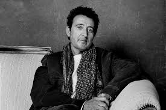

| Categoría | Detalle |
|---|---|
| Años activo | 1980 - 2026 - El Último de la Fila (1984-1998) y despues en solitario |
| Género musical principal | Un estilo muy personal, mezclando el rock con elementos del pop, ritmos aflamencados y letras de carácter poético y surrealista |
| Disco más vendido | Arena en los bolsillos" (1998) más de 600.000 copias (6 discos de platino) |
| Premios importantes | Latin Grammy (2018); Medalla de Oro al Mérito en las Bellas Artes (2020); varios Premios Ondas |
Manolo García no es solo un músico; es un artesano de la palabra y el ritmo. Su propuesta es un refugio para quienes buscan contenido con peso emocional. Sus letras, cargadas de un surrealismo poético, logran algo difícil: ser profundamente complejas y, a la vez, sonar sencillas y directas al corazón. Musicalmente, ha sabido maridar el rock con el aroma del sur sin caer en el tópico, creando un sonido que se reconoce al primer segundo de guitarra.